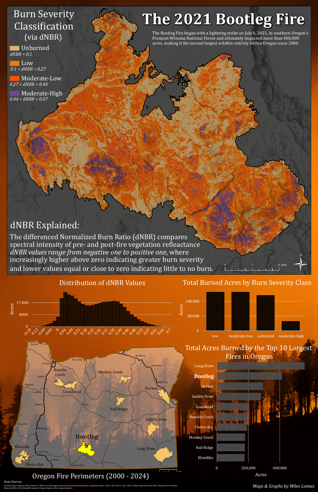

Cartographic Portfolio / Miles Lomas
2021 Bootleg Fire
Burn Severity Map
A cartographic assessment of burn severity following the 2021 Bootleg Fire in southern Oregon, with supporting charts and statewide wildfire context.
This map is a companion cartographic product to the Python analysis. Its classifications and summaries should be interpreted within the context of this layout.
